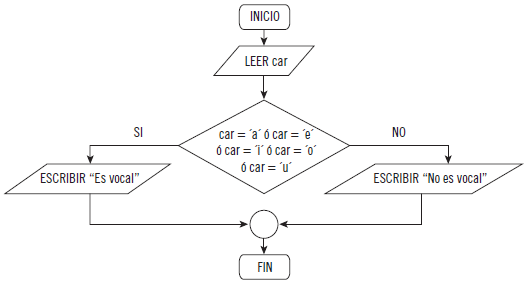
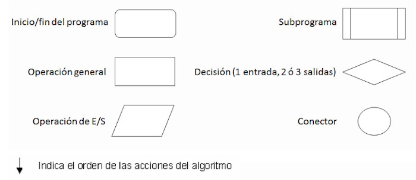
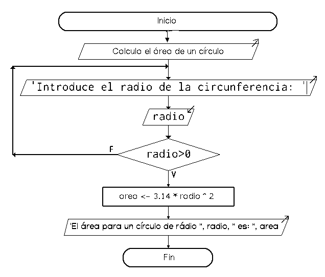

Els algorismes es poden representar gràficament per mitjà de diagrames de flux. Els diagrames de flux es poden utilitzar amb altres fins, no obstant això, als diagrames de flux que representen algorismes també se'ls coneix com a ordinogrames. Un ordinograma és un ús específic d'un diagrama de flux.
Un ordinograma representa, de manera gràfica, un algorisme. Per exemple, vegeu el següent ordinograma:

El pseudocodi i els diagrames de flux són les dues eines més utilitzades per a dissenyar algorismes en programació estructurada. Si bé, entre tots dos tipus de representació existeixen les següents diferències importants:
- Els diagrames de flux van començar a utilitzar-se abans que el pseudocodi.
- En pseudocodi se solen definir tres seccions de l'algorisme (capçalera, declaracions i cos). No obstant això, en un ordinograma només es representa el cos.
- En un ordinograma sol ser més fàcil veure, a primera vista, quin és l'ordre de les accions de l'algorisme.
- Els símbols gràfics utilitzats en un diagrama de flux han sigut estandarditzats pel American National Standards Institute (ANSI). No obstant això, no existeix un "pseudocodi estàndard".
A continuació, es mostren els símbols gràfics més utilitzats per a dissenyar ordinogrames:

Seguidament es pot veure un exemple d'ordinograma en el qual, a partir d'un valor de radi introduït per l'usuari, si aquest és major que zero es procedirà a calcular l'àrea de l'esfera per a eixe valor de ràdio. Si, d'altra banda, el valor del radi fora negatiu es tornarà a sol·licitar a l'usuari un nou valor de ràdio:
